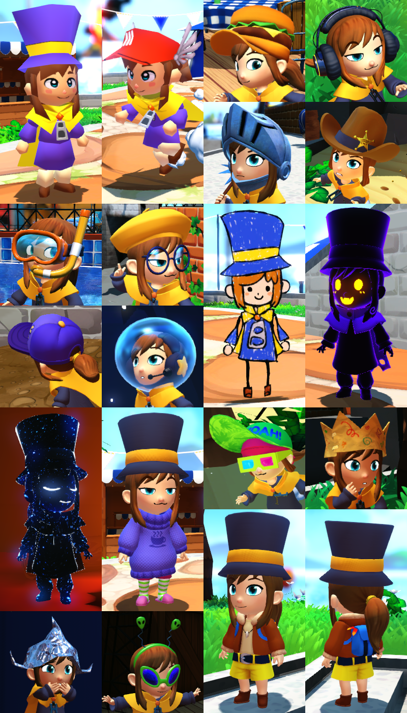

A Hat in Time's main villain is an anti-hero known as Mustache Girl. Through the course of the game she shows up a lot, and was originally intended to have her own set of missions before she turns against the protagonist Hat Kid. While that never came to fruition, I did develop Mustache Girl into a really fun alternate player character for A Hat in Time's main campaign!
I wanted to give Mustache Girl her own unique mechanics (and she didn't have a wall climbing animation) so instead of climbing walls, she bounces off them with her own brand of explosives! She also has a handful of other bombs and tools that act as parallels to Hat Kid's own hat-based abilities, and a few unique moves like her cool flying kick and slap attacks!
These are the core of Mustache Girl's moveset. These bombs are thrown in whatever direction you hold input, so it's very easy to control where they go. You can throw these at walls and use the explosions to do some crazy bounce jumps. If you throw a bomb while falling down (and not holding input towards a wall), you can launch yourself high off the ground!
These bomb abilities were balanced to keep pace with Hat Kid and serve as more of a sidegrade than an upgrade. While Mustache Girl's bomb jumping can launch you pretty fast and pretty high, it's no faster than Hat Kid's Sprint Hat, and no higher than Hat Kid's ability to climb up a wall. This way, the game balance and level layouts remain challenging for both characters.
Mustache Girl's flying kick is a replacement for Hat Kid's Homing Attack. Instead of homing directly to an enemy, you can use this move anywhere in any direction. There's a lot of mobility options with this move! If you kick an enemy with it, you gain momentum as you bounce through them. If you kick a wall, you get a bit of height which you can use to save yourself from missing a jump.
"Dweller" objects are green objects in the world that you fall straight through unless they are overlapping a Dweller Field. Since Mustache Girl is all about momentum, her Dweller Bomb fields don't last as long as Hat Kid's Dweller Mask. Instead of sustaining an active Dweller Field for long enough to run along a Dweller path, Mustache Girl relies on bouncing off the small Dweller Fields her bombs create. This gives Dweller objects a more unique and challenging style of gameplay!
Hat Kid's Ice Hat turns her into an ice statue and drops her straight down. Since the focus is on momentum, Mustache Girl's ice statue is launched by the explosion of her Ice Bombs. While you don't have any control as an ice statue, the Ice Bombs launch you a huge distance, so you can jump some very large gaps if you're willing to commit fully to a single long jump.
This tool is mostly just for fun. Throughout the game, Mustache Girl's graffiti can be seen all over where she's been. So now players can make their own huge mess!
Hat Kid doesn't know how to swim in A Hat in Time. There's plenty of water, but she will just rise to the surface and will drown if she stays in water for too long. I decided to expand on this feature by creating the Swimming Goggles. These let Hat Kid dive into water and swim around freely, using the jump button to ascend, and the ability button to dive further down. She can also do a tackle attack by pressing the attack button!
A Hat in Time base game doesn't feature a lot of underwater segments (since Hat Kid can't swim), so this was primarily made as a toolkit for modders to make their own underwater levels (A Hat in Time has a vivid modding scene still alive years later)! To support underwater content, I also added a few other underwater-specific features.
A staple of underwater segments in games is the classic air bubble. These are simple respawning pickups that refill Hat Kid's air meter to full. Having limited air underwater creates an urgency that is otherwise missing due to the lack of gravity and platforming. The gameplay of underwater segments becomes more about exploration, timing, and always looking for sources of air.
Another staple of underwater segments are water currents. These simply push the player back, but can act as a useful opposing force in an area where gravity isn't a factor. In the video above I have this hooked up to a fan that turns on and off, pushing Hat Kid away from the pickup, but there's plenty of other things you can do with them.
The squid was a scrapped enemy whose model was still in the game's files, so I made use of it. The squid will float around until it spots a player, and will attack with two different moves depending on how far away the player is. For nearby players, the squid will charge up and unleash a radial field of electricity that you have to dash away from. For players at a distance, the squid fires slow moving projectiles for you to dodge. This kind of enemy design maintains a very telegraphed hostile presence, which is important when you have to worry about oxygen as well as health.
While at Gears for Breakfast I made a lot of other random content for A Hat in Time. Too much to go over here, but here's a short video featuring a few more of my favorites!
Between all the design and programming work, I found time to make a handful of hats and costumes! These were all original concepts, and comprised most of the unlockables available in Seal the Deal and Nyakuza Metro.
